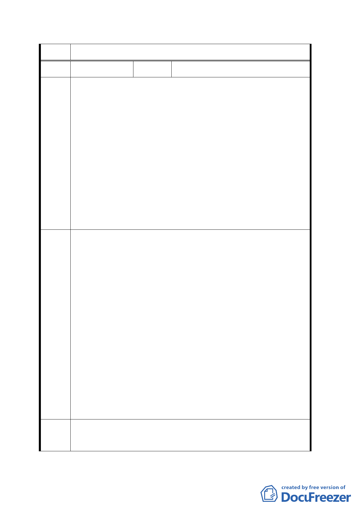

決議
編號
4
陳情人 王春
1. 園內站太靠近萬壽國宅及政大二街 171 巷 52 號之建築物。
2. 北移後可以拉直纜車路線，省掉纜車施工。
3. 園內站緊鄰動物園變電所及萬壽路邊高壓輸電線塔。
陳 情 九十三年十一月十二日補充：
理 由 1. 園內站與現有萬壽國宅太近，對住戶環境衝擊尚難預估。
2. 貓空纜車是要解決指南宮及貓空旅遊及住戶交通問題，但動
物園站及園內站都有可能製造新的交通及停車問題，應再慎
重評估。
1. 將園內站向北動物園之方向移。
2. 北移後至少應與民宅水平距離 100 公尺以上為妥。
3. 將萬壽路邊高壓輸電線塔移往動物園邊界。
九十三年十一月十二日補充：
1. 請再慎重評估為妥，最好不要設置園內站。
建 議 2. 建議起站（動物園站）移往新光路二段靠近深坑方向，其距
辦 法 離約從動物園站起一千公尺以上（不是 800 公尺動物檢疫所
地方），的地方設起站。一方面可以避免萬興里住戶環境及
交通衝擊；二方面可以開闢新光路二段新開發道路及環境的
利用；三方面可以省掉園內站的設置，因為起站是動物園站
可共用。而且此站到指南宮站距離更近，可以節省建設經
費；又更靠近第二期環保公園，避免將來發展上的新問題。
專 案 小 1. 園內站維持原設站之規劃。
組 結 論 2. 高壓電塔市府已協調台電公司配合予以地下化。
一二